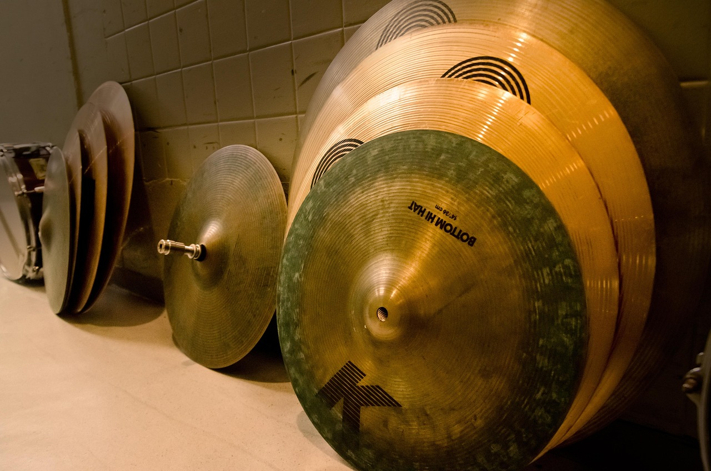

Geschichte des Schlagzeugs: Das Herzstück jeder Band
Das moderne Schlagzeug ist eine relativ junge Erfindung, die erst
Anfang des 20. Jahrhunderts entstand. Heute ist es das
unverzichtbare Fundament jeder Band und sorgt für Groove, Energie
und Dynamik in Rock, Jazz, Pop, Funk und unzähligen weiteren Genres.
Die Anfänge: Vom Einzelinstrument zum Set
Bis zum Ende des 19. Jahrhunderts wurden in Orchestern und
Marschkapellen Trommeln und Becken von mehreren Musikern gespielt.
Die Große Trommel (Bass Drum) wurde von einem Musiker gespielt, die
Snare von einem anderen, Becken von einem dritten. Das war
unpraktisch und personalintensiv. Mit dem Aufkommen von
Vaudeville-Theatern, Jazz-Clubs und kleineren Bands wurde ein Bedarf
nach einer platzsparenden Lösung laut: Ein Musiker sollte mehrere
Percussion-Instrumente gleichzeitig spielen können.
Die Erfindung des Bass-Drum-Pedals
Der entscheidende Durchbruch kam 1909, als
William F. Ludwig Sr. das erste praktikable
Bass-Drum-Pedal erfand. Mit diesem Pedal konnte ein Schlagzeuger die
große Trommel mit dem Fuß spielen, während die Hände frei waren für
Snare, Becken und andere Trommeln. Dieses Patent legte den
Grundstein für das moderne Drumset.
Das Jazz-Zeitalter: Das Drumset nimmt Form an
In den 1920er und 30er Jahren, der Ära des Jazz und Swing,
entwickelte sich das Drumset weiter. Komponenten wie die Hi-Hat
(ursprünglich "Low-Boy" genannt, bodennah gespielt, später erhöht),
Ride- und Crash-Becken, Tom-Toms und Snare-Drum wurden zu einem Set
kombiniert. Drummer wie Baby Dodds und
Gene Krupa popularisierten das Schlagzeug als
Soloinstrument und zeigten, dass Drummer nicht nur Taktgeber,
sondern auch Entertainer sein können. Gene Krupa's Solo in "Sing,
Sing, Sing" (1937) mit Benny Goodman machte ihn zum ersten
Schlagzeug-Superstar.
Rock 'n' Roll & die Revolution der 1960er/70er
Mit dem Aufkommen von Rock 'n' Roll in den 1950ern und Rockmusik in
den 1960ern wurde das Schlagzeug lauter, kraftvoller und zentraler.
Drummer wie Ringo Starr (The Beatles),
Keith Moon (The Who) und vor allem
John Bonham (Led Zeppelin) definierten den Sound
des Rock-Schlagzeugs: wuchtig, dynamisch und ausdrucksstark. Das
Drumset wurde größer – mehr Toms, größere Bass-Drums, mehr Becken.
In den 1970er Jahren baute Neil Peart (Rush)
gigantische Sets mit Dutzenden von Trommeln und Becken.
Elektronische Drums & moderne Entwicklungen
In den 1980er Jahren kamen elektronische Drums auf den Markt. Firmen
wie Roland und Simmons entwickelten E-Drums, die kompakter, leiser
und vielseitiger waren. Sie ermöglichten es, in Wohnungen zu üben,
verschiedene Sounds abzurufen und mit Click-Tracks zu spielen. Heute
kombinieren viele Drummer akustische und elektronische Elemente
(Hybrid-Setups). Moderne Schlagzeuger nutzen Trigger, Samples,
Loop-Pads und digitale Technik, um ihren Sound zu erweitern.

Ikonen am Schlagzeug: Berühmte Drummer
Von Rock bis Jazz – diese Schlagzeugerinnen und Schlagzeuger zeigen,
wie sehr Persönlichkeit, Technik und Groove den Bandsound prägen.
John Bonham (1948-1980)
John Henry Bonham, genannt "Bonzo", kam aus den englischen Midlands
(Redditch, Worcestershire) und trommelte als Kind auf Töpfen,
Pfannen und einem selbstgebauten Set aus Pappkartons. Mit 15 bekam
er sein erstes richtiges Drumset. Er arbeitete kurz als Maurer,
bevor er Vollzeit-Musiker wurde. 1968 holte ihn Jimmy Page zu Led
Zeppelin, und Bonham wurde das rhythmische Herz der Band. Seine
gewaltige Bassdrum, sein einzigartiges Timing und sein Gefühl für
Dynamik (von flüsterleise bis ohrenbetäubend laut) definierten den
Hardrock der 1970er Jahre. Bei Soli wie „Moby Dick" griff er schon
mal mit bloßen Händen an die Felle und erzeugte unglaubliche
Grooves. Bonham starb tragisch 1980 nach exzessivem Alkoholkonsum,
doch sein Einfluss auf Rock-Drummer ist bis heute unübertroffen.
Sein Groove in "When the Levee Breaks" gilt als einer der
meist-gesampleten Drum-Beats der Musikgeschichte.
Bonhams legendäres Drumsolo live 1970:

Buddy Rich (1917-1987)
Bernard „Buddy" Rich war ein Wunderkind des Vaudeville und trat
bereits mit 18 Monaten als "Baby Traps, the Drum Wonder" auf. Mit 11
Jahren leitete er eine eigene Band. Nach dem Zweiten Weltkrieg, in
dem er bei der Marines diente, spielte er mit den größten Big Bands
(Tommy Dorsey, Harry James) und leitete später eigene Bands. Seine
unglaubliche Technik, Geschwindigkeit und Präzision machten ihn zur
Messlatte für Jazz-Drummer auf der ganzen Welt. Buddy Rich spielte
im traditionellen Matched Grip und war bekannt für seine
blitzschnellen Single-Stroke-Rolls und sein fotzenhartes
Temperament. Er beherrschte komplexe Big-Band-Arrangements meist
schlicht nach Gehör, ohne Noten. Bis zu seinem Tod 1987 tourte er
unermüdlich und inspirierte Generationen von Drummern.
Buddys atemberaubender TV-Auftritt bei der Tonight Show:
Sheila E. (geb. 1957)
Sheila Escovedo stammt aus einer berühmten Musikerfamilie in
Oakland, Kalifornien – ihr Vater Pete Escovedo war ein renommierter
Percussionist. Mit fünf Jahren stand sie bereits mit ihm auf der
Bühne. Als Teenager tourte sie mit ihrem Vater und lernte Latin-,
Jazz- und Funk-Rhythmen. In den 1980er Jahren wurde sie durch ihre
Zusammenarbeit mit Prince weltbekannt. Mit ihm ging
sie auf Welttournee und lieferte energiegeladene Performances, die
Timbales, Congas und Drumset kombinierten. Hits wie "The Glamorous
Life" und "A Love Bizarre" machten sie zum Star. Sheila E. verbindet
seither Latin-Grooves mit Pop-Energie, spielt mit Jazz-Größen,
produziert und setzt sich mit ihrer Elevate Hope Foundation für
benachteiligte Kinder ein. Sie ist eine der einflussreichsten
Schlagzeugerinnen und zeigt, dass Frauen im Percussion-Bereich
Maßstäbe setzen können.
Timbales-Show mit Prince live:
Ringo Starr (geb. 1940)
Richard Starkey, bekannt als Ringo Starr, wuchs in Liverpool in
ärmlichen Verhältnissen auf und verbrachte als Kind viel Zeit im
Krankenhaus wegen schwerer Erkrankungen. Die Musik wurde sein
Zufluchtsort. 1962 wurde er Schlagzeuger der Beatles und lieferte
mit lässigem Groove, Kreativität und Humor den unverwechselbaren
Puls für die Band. Obwohl er oft als "einfacher" Drummer abgetan
wurde, sind seine Grooves und Fills ("Come Together", "A Day in the
Life", "Ticket to Ride") ikonisch und perfekt auf die Songs
abgestimmt. Ringo nutzte trotz Linkshändigkeit ein
Rechtshänder-Drumset, was seine berühmten "um die Ecke"-Fills
ermöglichte. Nach den Beatles hatte er eine erfolgreiche
Solokarriere, tourt bis heute mit seiner All-Starr Band und setzt
sich für Frieden und Vegetarismus ein.
Ringo's unverwechselbarer Groove zu „Come Together":
Travis Barker (geb. 1975)
Travis Landon Barker wuchs in Fontana, Südkalifornien, auf. Seine
Mutter erkannte früh sein Talent und schenkte ihm sein erstes
Drumset mit fünf Jahren. Er spielte in Marching Bands, Jazz-Bands
und Punk-Bands, bevor er 1998 bei Blink-182 einstieg und die Band
zum Pop-Punk-Phänomen machte. Sein schnelles, technisches Spiel mit
Hip-Hop- und Punk-Einflüssen definierte den Sound der Band. 2008
überlebte er knapp einen Flugzeugabsturz, bei dem vier Menschen
starben und er schwere Verbrennungen erlitt. Nach langer Reha
kämpfte er sich zurück auf die Bühne. Seither mischt er mit
Kollaborationen von Punk über Hip-Hop bis Pop (u.a. mit Lil Wayne,
Machine Gun Kelly, Willow Smith) und betreibt nebenbei die
Streetwear-Marke „Famous Stars and Straps". Travis ist bekannt für
seine rasanten Drum-Fills, Double-Bass-Arbeit und energetischen
Live-Performances.
Travis Barker's Drum-&-DJ-Performance:
Berühmte Grooves & Songs zum Lernen
Hier sind einige legendäre Drum-Grooves, die sich hervorragend für
den Einstieg eignen. Wir haben dir Links zu Tutorials und Tabs
zusammengestellt.
| Song |
Künstler |
Warum er sich lohnt |
Link |
| We Will Rock You |
Queen |
Der legendäre "Stomp-Stomp-Clap"-Groove! Einfach, aber
extrem effektiv. Perfekt für Anfänger.
|
|
| Smells Like Teen Spirit |
Nirvana |
Der Grunge-Klassiker! Ein treibender Rock-Beat, der Energie
und Power vermittelt.
|
|
| Superstition |
Stevie Wonder |
Ein Funk-Meisterwerk! Synkopierte Hi-Hat und fetter Groove.
Perfekt, um Timing zu trainieren.
|
|
| Come Together |
The Beatles |
Ringo Starrs unverwechselbarer Groove. Laid-back, aber mit
präzisen Fills. Ein Klassiker!
|
|
| Uptown Funk |
Bruno Mars |
Moderner Funk mit tightem Groove! Perfekt für Pop-Drummer
und Dance-Feeling.
|
|
Ausrüstung: Leise üben oder echter Kesselsound?
Die wichtigsten Optionen auf einen Blick – mit Bildern und klaren
Empfehlungen.
1. Set‑Wahl

-
Akustik‑Set (5‑teilig): Bass, Snare, 2 Toms,
Floor‑Tom + Hi‑Hat/Crash/Ride. Lebendig, dynamisch – ideal für
Bühne und Proberaum.

-
E‑Drums: Mesh‑Pads + gutes Modul,
Kopfhöreranschluss. Wohnungstauglich, vielseitig, leise.
2. Becken & Felle

-
Becken: Lieber weniger, dafür hochwertige
(Hi‑Hat, Crash, Ride) – klingen besser und inspirieren.
-
Felle: Coated = wärmer, satter; Clear = heller,
durchsetzungsstarker. Neue Felle bringen sofort frischen Klang.
3. Zubehör
-
Sticks: 5A (Allround), 5B (kräftiger), 7A
(leicht/leise). Marken: Vic Firth, Promark, Vater.
-
Hocker: stabil, höhenverstellbar;
Übungspad für Stick‑Kontrolle.
-
Gehörschutz: Pflicht am akustischen Set. Für
E‑Drums: bequeme, geschlossene Kopfhörer.
4. Wartung & Tipps
-
Felle je nach Nutzung alle 6–12 Monate wechseln.
-
Hardware regelmäßig prüfen und schmieren;
wackelige Stative sofort nachziehen.
-
Platzbedarf realistisch einschätzen – daheim wirkt alles größer
als im Laden.